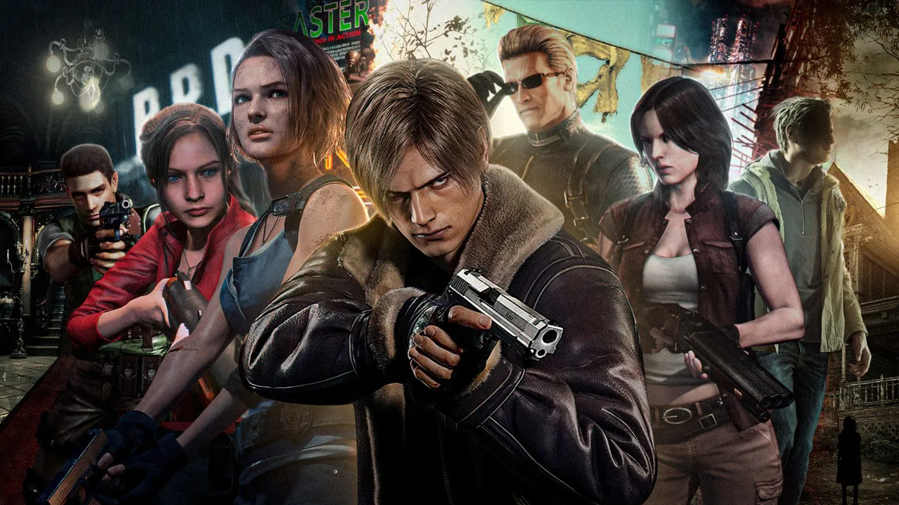

Resident Evil

Resident Evil ou Biohazard (バイオハザード, Baiohazādo) no Japão, é uma série japonesa de jogos eletrônicos de tiro em terceira pessoa e de survival horror, criada e publicada pela Capcom para várias plataformas. A série também consiste em jogos de tiro em primeira pessoa, com os jogadores normalmente sobrevivendo em ambientes urbanos pós-apocalípticos infestados por zumbis e outras criaturas assustadoras. A franquia expandiu para outros tipos de mídia, incluindo uma série de filmes live-action, filmes animados, série de televisão, quadrinhos, livros e merchandise. Resident Evil é uma franquia de terror mais bem sucedida de todos os tempos.